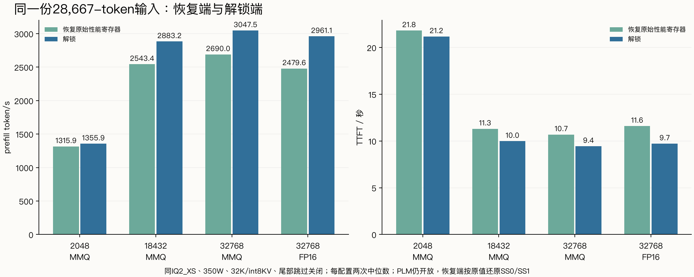
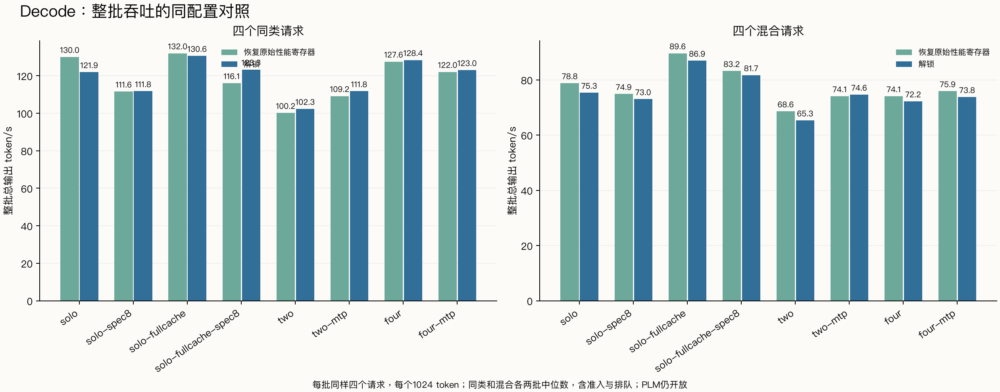

恢复端使用本卡最初日志中的 SS0=0x02200115、SS1=0x4；PLM仍开放。FP16/BF16矩阵吞吐已恢复原基线，六组完整输出哈希与原始未解锁端一致。本次衡量性能选择寄存器恢复前后的速度差，恢复端并非完整物理冷启动。
同一IQ2_XS、Strata0.1.43/同引擎SHA、同350W、PCIe Gen3×16、同输入及专家画像；关闭前缀/对话缓存、尾部跳过和CPU prefill分担。每种输入/请求组合两轮；配置间速度差与解锁收益分别计算。
每输入只生成1 token。吞吐列为引擎prompt阶段中位数；提速=解锁/恢复−1，TTFT缩短=1−解锁/恢复。
| 配置 | 输入 token | 恢复 token/s | 解锁 token/s | 提速 | 恢复 TTFT s | 解锁 TTFT s | TTFT缩短 |
|---|---|---|---|---|---|---|---|
| pf2048 | 1007 | 769.6 | 798.0 | +3.7% | 1.330 | 1.283 | +3.5% |
| pf2048 | 4089 | 1299.2 | 1330.4 | +2.4% | 3.171 | 3.098 | +2.3% |
| pf2048 | 16401 | 1297.3 | 1333.4 | +2.8% | 12.675 | 12.334 | +2.7% |
| pf2048 | 28667 | 1315.9 | 1355.9 | +3.0% | 21.824 | 21.181 | +2.9% |
| pf18432 | 1007 | 767.0 | 797.0 | +3.9% | 1.334 | 1.285 | +3.7% |
| pf18432 | 4089 | 1829.0 | 1993.3 | +9.0% | 2.259 | 2.075 | +8.1% |
| pf18432 | 16401 | 2565.9 | 2922.5 | +13.9% | 6.425 | 5.646 | +12.1% |
| pf18432 | 28667 | 2543.4 | 2883.2 | +13.4% | 11.311 | 9.983 | +11.7% |
| pf32768 | 1007 | 763.5 | 791.6 | +3.7% | 1.341 | 1.294 | +3.5% |
| pf32768 | 4089 | 1823.8 | 1981.2 | +8.6% | 2.267 | 2.088 | +7.9% |
| pf32768 | 16401 | 2571.9 | 2917.9 | +13.4% | 6.414 | 5.656 | +11.8% |
| pf32768 | 28667 | 2690.0 | 3047.5 | +13.3% | 10.697 | 9.448 | +11.7% |
| pf32768-fp16 | 1007 | 715.6 | 753.4 | +5.3% | 1.429 | 1.358 | +4.9% |
| pf32768-fp16 | 4089 | 1569.9 | 1749.8 | +11.5% | 2.629 | 2.361 | +10.2% |
| pf32768-fp16 | 16401 | 2300.2 | 2738.8 | +19.1% | 7.164 | 6.022 | +15.9% |
| pf32768-fp16 | 28667 | 2479.6 | 2961.1 | +19.4% | 11.602 | 9.725 | +16.2% |

每批同样四个请求，各输出1024 token；同类/混合各两批。整批吞吐含准入和客户端排队；TPOT为每请求(E2E−TTFT)/(N−1)的中位数。中央解码窗口另见summary.json。
| 配置 | 组合 | 恢复整批 token/s | 解锁整批 token/s | 吞吐提速 | 恢复 TPOT ms | 解锁 TPOT ms | TPOT缩短 |
|---|---|---|---|---|---|---|---|
| decode-solo | shared | 130.03 | 121.92 | -6.2% | 6.93 | 7.28 | -5.0% |
| decode-solo | mixed | 78.81 | 75.32 | -4.4% | 11.57 | 12.30 | -6.4% |
| decode-solo-spec8 | shared | 111.58 | 111.76 | +0.2% | 8.03 | 7.89 | +1.8% |
| decode-solo-spec8 | mixed | 74.88 | 73.01 | -2.5% | 11.91 | 11.27 | +5.3% |
| decode-solo-fullcache | shared | 131.98 | 130.59 | -1.1% | 6.78 | 6.85 | -1.0% |
| decode-solo-fullcache | mixed | 89.63 | 86.94 | -3.0% | 9.79 | 10.09 | -3.1% |
| decode-solo-fullcache-spec8 | shared | 116.06 | 123.32 | +6.3% | 7.74 | 7.61 | +1.7% |
| decode-solo-fullcache-spec8 | mixed | 83.20 | 81.69 | -1.8% | 10.67 | 10.61 | +0.6% |
| decode-two | shared | 100.17 | 102.31 | +2.1% | 19.50 | 18.84 | +3.4% |
| decode-two | mixed | 68.60 | 65.31 | -4.8% | 28.05 | 28.95 | -3.2% |
| decode-two-mtp | shared | 109.18 | 111.75 | +2.4% | 17.28 | 17.39 | -0.7% |
| decode-two-mtp | mixed | 74.07 | 74.63 | +0.8% | 26.45 | 24.40 | +7.8% |
| decode-four | shared | 127.55 | 128.40 | +0.7% | 29.61 | 29.30 | +1.1% |
| decode-four | mixed | 74.07 | 72.22 | -2.5% | 52.07 | 53.53 | -2.8% |
| decode-four-mtp | shared | 122.05 | 123.01 | +0.8% | 30.94 | 30.93 | +0.0% |
| decode-four-mtp | mixed | 75.89 | 73.77 | -2.8% | 48.58 | 49.92 | -2.8% |

固定缓存decode各组实际11546个native槽、15843MiB；单流auto缓存另列。18432 MMQ两端均有6072/6072个借出槽在RAM中备份，23.16GiB专家内存全锁页；FP16 32768两端均9126/9126、27.24GiB全锁页。MMQ auto:32768借出10652槽，解锁端覆盖10598、恢复端10592，RAM边缘存在6槽差异，因此以18432组作为更干净的大分块对照；raw文件保留。两端按先后顺序运行，重复次数有限，几个百分点的差异需结合范围和资源采样解释。